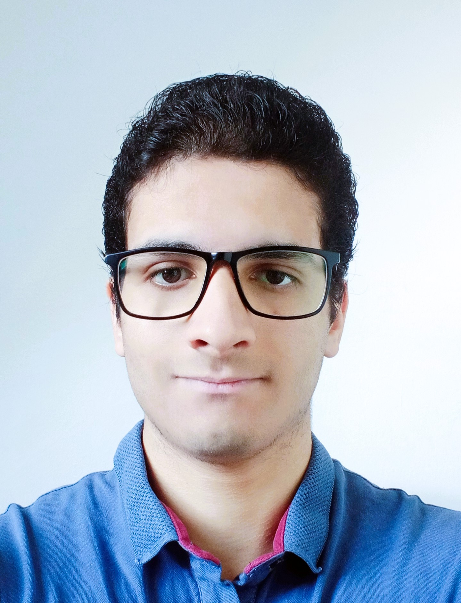

Eslam Nasrallah

ABOUT ME
Education
- MASTER INFORMATK (TUM)
10/2024 München, Germany
- BACHELOR INFORMATK (TUM)
09/2021 to 10/2024 München, Germany
- GENERAL SECONDARY EDUCATION CERTIFICATE
2019 Giza, Egypt
WORK EXPERIENCE
- BACHELOR THESIS (BMW GROUP)
06/2024 to 10/2024 Munich, Germany
Supervised by the BAC Team at BMW Group and the Chair of Computer Architecture, TUM. Investigated AUTOSAR
virtualization layers and implemented a virtual test setup for BAC modules, allowing hardware-independent ECU
software testing.
- SOFTWARE DEVELOPER (BMW GROUP)
11/2023 to 05/2024 Munich, Germany
Developed tools to support testing and tracing AUTOSAR requirements for the BAC team. Integrated these tools into
the BAC Continuous Integration (CI) pipeline.
- TEACHING ASSISTANT (TUM)
04/2023 to 30/09/2023
Teaching Assistant for "Grundlagenpraktikum: Rechnerarchitektur(IN0005)" course